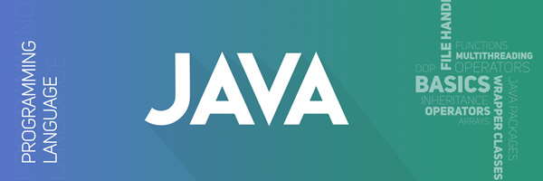
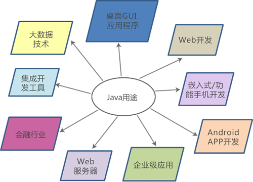

Java可以做什么？9种Java实际用途汇总
在深入学习 Java 语言之前，你是否想知道 Java 可以用来做什么？现实世界中 Java 有哪些真正的用途呢？在这篇文章中，我将给你展示现实世界中的顶级 Java 应用程序。
1995 年，Sun 公司发布了 Java 语言；2010 年，Oracle 公司收购了 Sun 公司，自此 Java 归属于 Oracle。根据 Oracle 的统计，有近 30 亿台各种各样的设备都是用过 Java 进行开发，包括 Windows、Unix、Linux、Mac OS、Android 等。另外，Java 在企业级解决方案和嵌入式领域也取得了不小的成就。
现在，Java 是全球最流行的编程语言之一，几乎在所有领域都能发现 Java 应用程序，比如 PC 客户端、Web 开发、大数据、Android APP 等。
下面我们从 9 个方面罗列一下 Java 可以做什么。
除了强大的基础类库，Java 还附带了 AWT、Swing 和 JavaFx 模块，它们都是用来开发 GUI 程序的。这些模块提供了丰富的 API，能够让我们开发出复杂炫酷的界面，比如选项卡、表格、颜色拾取器、树形菜单、3D图形等。
AWT 和 Swing 是传统的 GUI 模块，JavaFx 是从 Java 8 开始发布的最新 GUI 模块。早期的 GUI 程序主要使用 AWT 和 Swing 开发，现在 JavaFx 变得越来越流行。
使用 Java 开发 GUI 程序的真实案例：
使用 Java 开发的著名网站真是太多了，Google、Facebook、Amazon、淘宝、百度、携程等国内外巨头无一不在使用 Java。
早期的功能手机也可以看成一个嵌入式系统，在智能机还没有大行其道之前，还记得摩托罗拉、诺基亚手机上的小游戏吗？这些就是使用 Java J2ME 开发的。另外，诺基亚上流行的 WhatsApp 也是用 J2ME 开发。
使用 Java 开发的 Android APP 有：
Java 拥有专门的企业级开发版本 Java EE（Java Enterprise Edition），它提供了丰富了 API 和专门的运行时环境，让用户在开发大型软件、网络工具以及 Web 服务时更加容易。根据 Oracle 统计，将近 97% 的企业计算机都在运行 Java 程序。
使用 Java 开发的典型企业级应用程序：
金融机构往往需要服务器集群来应对频繁且实时的交易，Java 可以从一台服务器接收数据，并对它进行处理，然后将处理结果发送给另一台服务器或者另一个进程。
Java 语言性能高、健壮、安全，天生适合金融机构，大多数头部的金融机构都基于 Java 来开展业务，比如花旗银行、高盛、巴克莱银行等。
开源软件 Hadoop 是大数据处理的热门框架之一，它就使用 Java 编写。
相比其它编程语言，Java 在垃圾自动回收、堆内存和栈内存分配方面拥有更大的优势，这使用 Java 更加适合处理大数据集。
基于 Java 的大数据工具有：
1995 年，Sun 公司发布了 Java 语言；2010 年，Oracle 公司收购了 Sun 公司，自此 Java 归属于 Oracle。根据 Oracle 的统计，有近 30 亿台各种各样的设备都是用过 Java 进行开发，包括 Windows、Unix、Linux、Mac OS、Android 等。另外，Java 在企业级解决方案和嵌入式领域也取得了不小的成就。
现在，Java 是全球最流行的编程语言之一，几乎在所有领域都能发现 Java 应用程序，比如 PC 客户端、Web 开发、大数据、Android APP 等。

下面我们从 9 个方面罗列一下 Java 可以做什么。
1. 桌面 GUI 应用程序
桌面 GUI 程序也叫客户端程序，就是类似于 QQ、迅雷、360 的电脑软件。除了强大的基础类库，Java 还附带了 AWT、Swing 和 JavaFx 模块，它们都是用来开发 GUI 程序的。这些模块提供了丰富的 API，能够让我们开发出复杂炫酷的界面，比如选项卡、表格、颜色拾取器、树形菜单、3D图形等。
AWT 和 Swing 是传统的 GUI 模块，JavaFx 是从 Java 8 开始发布的最新 GUI 模块。早期的 GUI 程序主要使用 AWT 和 Swing 开发，现在 JavaFx 变得越来越流行。
使用 Java 开发 GUI 程序的真实案例：
- Adobe Acrobat Reader（Adobe PDF 阅读器）
- ThinkFree Office（类似于 Microsoft Office 的办公软件）
2. Web 开发（网站后台开发）
基于 Java 的 Web 开发组件有很多，包括 Java 官方提供的 Servlet 和 JSP，以及第三方提供的 Structs、Spring、Hibernate、MyBatis、Spring MVC、Spring Boot、Spring Cloud 等。使用 Java 开发的著名网站真是太多了，Google、Facebook、Amazon、淘宝、百度、携程等国内外巨头无一不在使用 Java。
3. 嵌入式开发/功能手机开发
Java 有一个裁剪过的版本，叫做 J2ME（Java 2 Platform Micro Edition），主要用于嵌入式系统或者功能手机的开发。嵌入式系统是完整工业产品的一部分，由微型芯片、微处理器等构成，它们往往比较廉价，性能不高，所以一般被当做低级系统。
Java 能够有效且快速地处理程序异常，因此它也可以开发运行在低级系统上的应用程序，比如 SIM 卡、蓝光 DVD 播放机、机顶盒上的控制程序。早期的功能手机也可以看成一个嵌入式系统，在智能机还没有大行其道之前，还记得摩托罗拉、诺基亚手机上的小游戏吗？这些就是使用 Java J2ME 开发的。另外，诺基亚上流行的 WhatsApp 也是用 J2ME 开发。
4. Android APP 开发
Android APP 也使用 Java 语言进行开发，不过它不是基于 J2ME，而是基于 Android 自己的开发组件，叫做 Android SDK。使用 Java 开发的 Android APP 有：
- Google 地球
- Uber
- Netflix
- 抖音
- 淘宝
- 微信
5. 企业级应用
Java 是企业级应用开发的首选语言，因为它不但功能强大，性能出众，而且安全性好，易于扩展。Java 拥有专门的企业级开发版本 Java EE（Java Enterprise Edition），它提供了丰富了 API 和专门的运行时环境，让用户在开发大型软件、网络工具以及 Web 服务时更加容易。根据 Oracle 统计，将近 97% 的企业计算机都在运行 Java 程序。
使用 Java 开发的典型企业级应用程序：
- ERP（Enterprise Resource Planning，企业资源规划）系统
- CRM（Customer Resource Management，客户资源管理）系统
6. Web 服务器
很多 Web 服务器也使用 Java 开发，包括 Tomcat、WebSphere、JBoss、WebLogic、Jigsaw、Rimfaxe Web Server（RWS）等，其中前 4 个使用最广泛。7. 金融行业
银行、交易所等金融机构需要各种各样的软件来处理日常事务，比如电子交易系统、结算系统、数据处理系统等，它们统称为“金融软件”。Java 主要用来开发金融软件的后台部分，也即运行在服务器端的程序。金融机构往往需要服务器集群来应对频繁且实时的交易，Java 可以从一台服务器接收数据，并对它进行处理，然后将处理结果发送给另一台服务器或者另一个进程。
Java 语言性能高、健壮、安全，天生适合金融机构，大多数头部的金融机构都基于 Java 来开展业务，比如花旗银行、高盛、巴克莱银行等。
8. 集成开发工具
很多集成开发工具（IDE）都是使用 Java 编写的，例如 Eclipse、IntelliJ IDEA 和 NetBeans 等，它们也是非常流行的桌面 GUI 程序。9. 大数据技术
大数据技术是当今最流行最热门的话题，它也是未来的发展趋势。大数据技术用来从不规则、大规模的数据集中分析和提取出有用信息。开源软件 Hadoop 是大数据处理的热门框架之一，它就使用 Java 编写。
相比其它编程语言，Java 在垃圾自动回收、堆内存和栈内存分配方面拥有更大的优势，这使用 Java 更加适合处理大数据集。
基于 Java 的大数据工具有：
- Hadoop
- Apache HBase
- ElasticSearch
- Accumulo
总结
正如我们在本文中看到的，Java 是当今最流行的编程语言之一，它可以应用在很多领域，这包括传统的 GUI 开发、嵌入式开发、Web 开发、Android APP 开发，以及目前如火如荼的大数据技术。

关注公众号「站长严长生」，在手机上阅读所有教程，随时随地都能学习。内含一款搜索神器，免费下载全网书籍和视频。

微信扫码关注公众号